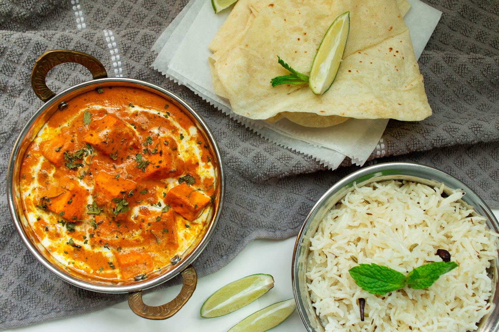
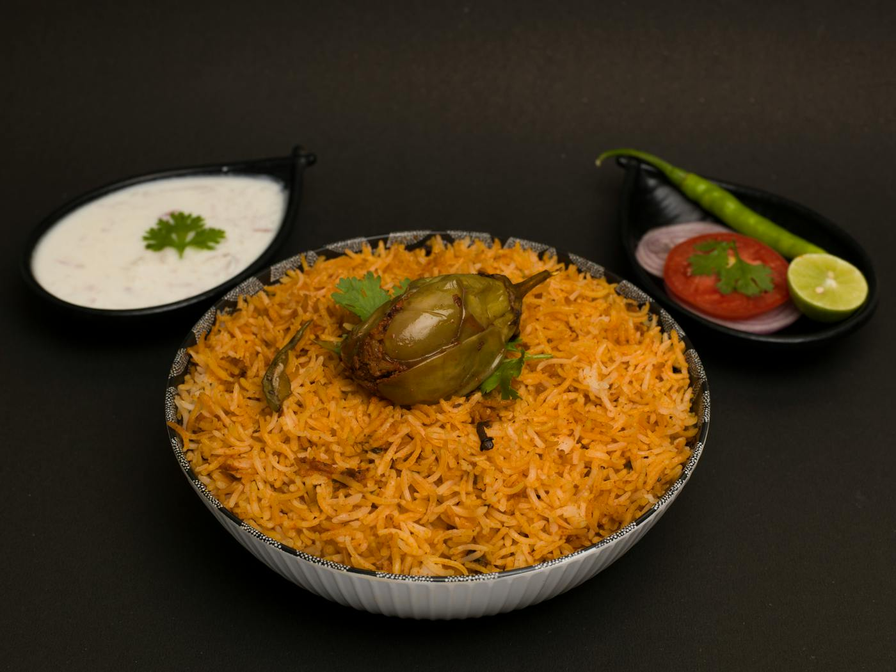
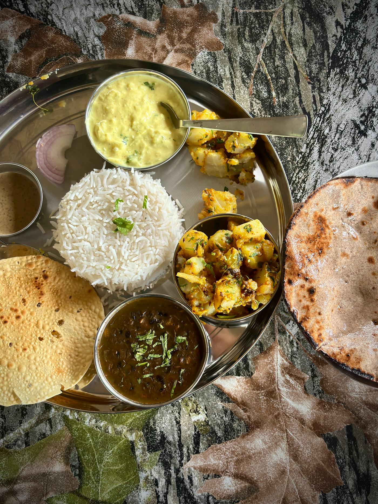
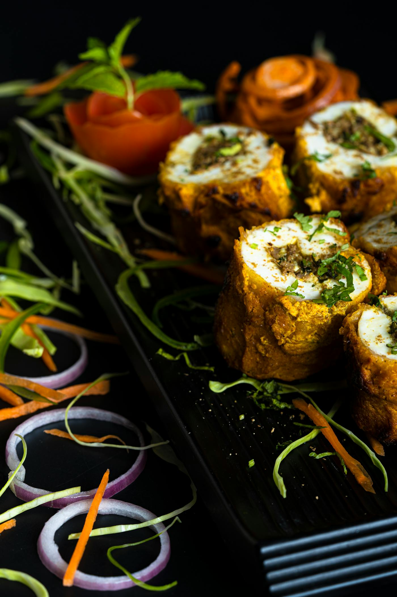
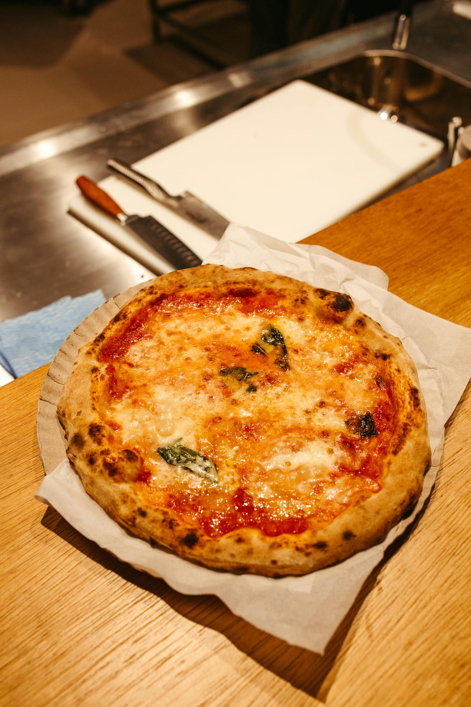
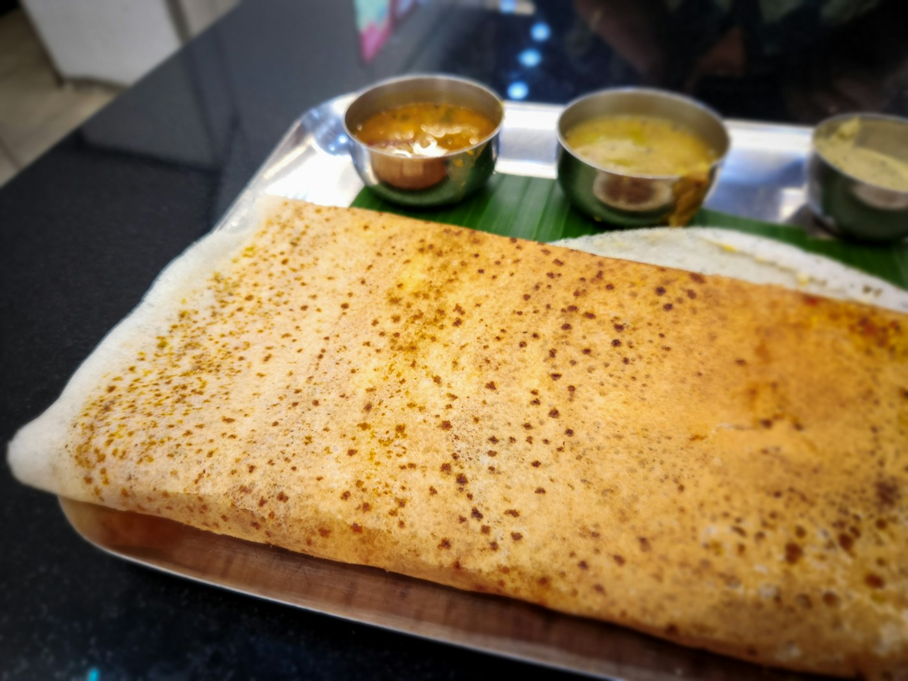
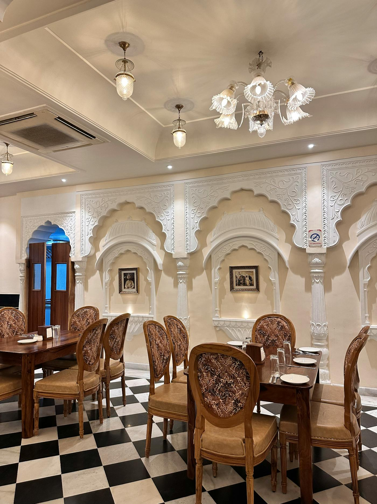

Fine vegetarian dining in the city
Urban Spice
Authentic Indian Vegetarian Cuisine
Crafted with seasonal produce, aromatic spices, and timeless recipes, Urban Spice brings a polished Indian vegetarian experience to every table.
Chef's Selection
Fresh ingredients. Bold Indian flavors. Elevated presentation.
From smoky tandoori classics to comforting thalis and crisp dosas, every dish is prepared with care for modern vegetarian dining.
About Urban Spice
A warm, contemporary take on Indian vegetarian dining.

Urban Spice celebrates the depth of Indian vegetarian cuisine through thoughtfully sourced ingredients, refined cooking, and a calm, premium atmosphere. Our menu blends regional inspiration with a modern restaurant experience.
We focus on fresh vegetables, house-ground spices, slow-simmered sauces, and balanced flavors that feel both authentic and memorable. Whether you are joining us for lunch, dinner, or a family gathering, every plate is designed to feel generous and vibrant.
Fresh Daily
Seasonal produce and hand-prepped ingredients.
Indian Heritage
Traditional flavors presented with a modern touch.
Signature Menu
Vegetarian favorites prepared for a polished dining experience.





Gallery
Plates, spaces, and details that define the Urban Spice experience.






Testimonials
Guests return for the flavor, the service, and the atmosphere.
“The Paneer Butter Masala was beautifully balanced and the room felt calm and upscale. It is one of the best vegetarian dining experiences we have had in the city.”
Priya S.
“Urban Spice gets every detail right, from presentation to service. The Veg Thali was generous, fresh, and full of authentic flavor.”
Rahul M.
“A polished restaurant that still feels warm and welcoming. The dosa was crisp, the biryani was aromatic, and we loved the ambiance.”
Ananya K.
Contact
Visit Urban Spice for refined Indian vegetarian dining.
Address
42 Green Park Avenue, Bengaluru, Karnataka 560001